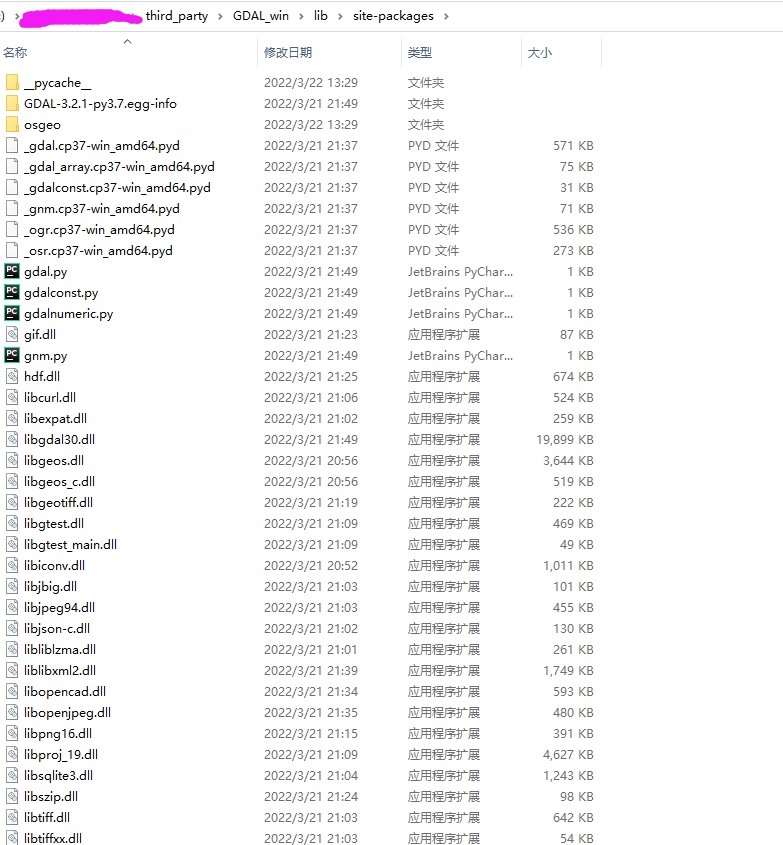

源码编译方式安装Window LuoJiaNET CPU版本¶
本文档介绍如何在CPU环境的Windows系统上，使用源码编译方式快速安装LuoJiaNET。下面以Win 10系统为例说明LuoJiaNET编译安装步骤。
环境准备¶
下表列出了编译安装LuoJiaNET GPU所需的系统环境和第三方依赖。
| 软件名称 | 版本 | 作用 |
|---|---|---|
| Windows | 10 | 编译和运行LuoJiaNET的操作系统 |
| MinGW | 7.3 | LuoJiaNET CPU使用的编译环境 |
安装MinGW¶
在Win10下安装MinGW的详情可查看MinGW-64下载页面。
编译LuoJiaNET¶
进入LuoJiaNET根目录，然后执行编译脚本。
cd luojianet
build_gdal.bat
build.bat
其中：
build_gdal.bat 用于从源码编译依赖库GDAL，需要较长时间请耐心等待
build.bat用于编译LuoJiaNET CPU版本的源码默认从gitee下载依赖源码。
安装LuoJiaNET¶
pip install output/luojianet_gpu-*.whl
注意 1：如果在Python环境下验证，出现如下错误：
 则按照网站 (https://zhuanlan.zhihu.com/p/302587005) 的方法，将Anaconda3\Lib\distutils\cygwinccompiler.py中：
则按照网站 (https://zhuanlan.zhihu.com/p/302587005) 的方法，将Anaconda3\Lib\distutils\cygwinccompiler.py中：elif int(msc_ver) >= 1900: # VS2015 / MSVC 14.0 return ['msvcr140']
修改为：
elif int(msc_ver) >= 1900: # VS2015 / MSVC 14.0 return ['vcruntime140']
注意 2：如果希望使用本机编译的Python版本GDAL库，需要将./third_party/GDAL_win/lib/site-packages 拷贝至Python环境Lib/site-package目录下： 
在联网状态下，安装LuoJiaNET时会自动下载LuoJiaNET安装包的依赖项（依赖项详情参见setup.py中的required_package），其余情况需自行安装。运行模型时，常见依赖可以参考requirements.txt。
如果因网速问题下载失败，可多次重复尝试
验证是否成功安装¶
方法一：
python -c "import luojianet_ms;luojianet_ms.run_check()"
如果输出：
LuoJiaNET version: 版本号
The result of multiplication calculation is correct, LuoJiaNET has been installed successfully!
说明LuoJiaNET安装成功。
方法二：
import numpy as np
from luojianet_ms import Tensor
import luojianet_ms.ops as ops
import luojianet_ms.context as context
context.set_context(device_target="CPU")
x = Tensor(np.ones([1,3,3,4]).astype(np.float32))
y = Tensor(np.ones([1,3,3,4]).astype(np.float32))
print(ops.add(x, y))
如果输出：
[[[[2. 2. 2. 2.]
[2. 2. 2. 2.]
[2. 2. 2. 2.]]
[[2. 2. 2. 2.]
[2. 2. 2. 2.]
[2. 2. 2. 2.]]
[[2. 2. 2. 2.]
[2. 2. 2. 2.]
[2. 2. 2. 2.]]]]
说明LuoJiaNET安装成功。